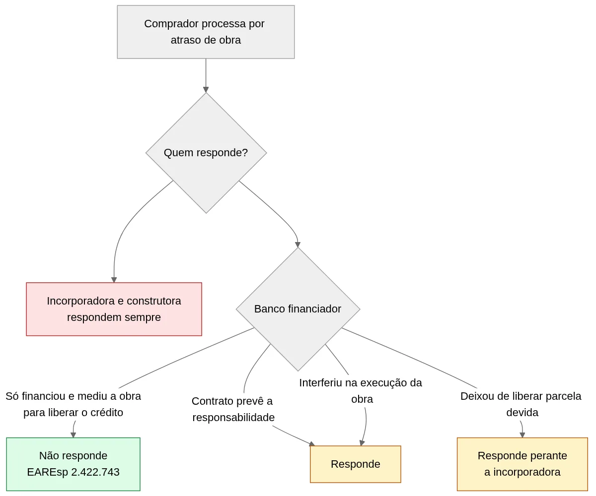

Banco Não Responde por Atraso de Obra, Decide o STJ
Quando um empreendimento atrasa, a ação judicial dos compradores costuma mirar em todos os que aparecem no contrato: a incorporadora, a construtora, às vezes a corretora e, com frequência, o banco que financiou a obra. A lógica parece simples. Se o banco fiscalizava o andamento e liberava o dinheiro por etapa, ele também teria culpa pelo atraso.
A 2ª Seção do Superior Tribunal de Justiça (STJ), que reúne os ministros das duas turmas responsáveis por contratos e imóveis, respondeu que não. Por unanimidade, decidiu que o banco que apenas financia a incorporação não responde, junto com a incorporadora, por atraso de obra nem por defeitos na construção. Fiscalizar para liberar crédito não é o mesmo que assumir a obra.
O caso é o EAREsp 2.422.743, e a relatora foi a ministra Maria Isabel Gallotti. A sigla indica embargos de divergência, o recurso usado para resolver discordâncias entre turmas do STJ. A decisão não obriga os tribunais estaduais, mas encerra essa divergência dentro do próprio STJ. Para quem constrói, incorpora ou investe, o risco do atraso de obra fica com quem executa, e isso precisa aparecer no contrato e no cronograma.
O que o STJ decidiu sobre o banco e o atraso de obra
O tribunal precisava responder se o banco que financia a construção pode ser processado junto com a incorporadora quando os compradores reclamam do atraso na entrega. A 2ª Seção disse que não, com ressalvas que aparecem mais abaixo.
O caso que chegou à 2ª Seção
Um casal comprou um imóvel na planta e entrou na Justiça para rescindir o contrato. Pediu indenização por danos materiais e compensação por danos morais por causa do atraso na entrega. Além da incorporadora, incluiu no processo o banco que havia financiado a construção.
O Tribunal de Justiça da Bahia (TJBA) manteve o banco na ação. No STJ, a 3ª Turma mencionou as Súmulas 5 e 7, que impedem o tribunal de reanalisar provas e cláusulas de contrato. Na prática, porém, confirmou a tese do TJBA: todas as empresas que se beneficiam da venda ao consumidor respondem juntas, e cada uma pode ser cobrada pelo valor total. O banco continuou no processo.
O banco então apresentou os embargos de divergência. Mostrou que a 4ª Turma, no AgInt no AgInt no REsp 1.875.510, havia excluído do processo uma instituição que atuava apenas como credora fiduciária, recebendo em garantia os créditos da venda das unidades.
Por que a decisão pesa, mesmo sem ser vinculante
Como a 2ª Seção reúne a 3ª e a 4ª Turmas, as duas tendem a seguir a mesma linha depois do julgamento. A decisão não vincula juízes nem tribunais estaduais, mas deve orientar os recursos que chegarem a Brasília daqui em diante.
Um banco mantido no processo por um tribunal estadual passa a ter um precedente claro para pedir a exclusão no STJ. Isso vale quando a decisão local se baseou apenas na fiscalização feita para liberar o crédito. Se o tribunal estadual apurou interferência real do banco na obra, as Súmulas 5 e 7 continuam barrando o recurso.
| Onde a questão é julgada | Como vinha sendo decidida | Como fica depois do EAREsp 2.422.743 |
|---|---|---|
| 3ª Turma do STJ | Via na fiscalização da obra motivo para o banco responder junto com a incorporadora | Segue o entendimento da 2ª Seção |
| 4ª Turma do STJ | Excluía o banco que atuava apenas como credor fiduciário | Mantém a linha, agora pacificada |
| Tribunais estaduais | Há câmaras que mantêm o banco como parte da cadeia de consumo | Não são obrigados a mudar, mas o recurso ao STJ ganha precedente favorável ao banco |
Fiscalizar a obra não é garantir a obra
O julgamento girou em torno do tipo de fiscalização que o banco faz, e é aqui que o tribunal separa acompanhamento financeiro de interferência na obra.
O que o banco confere na medição
O financiamento à produção é o empréstimo que o banco faz à incorporadora para erguer o prédio, diferente do financiamento que o comprador contrata para pagar a unidade. Nele, o dinheiro não sai de uma vez. O banco libera as parcelas conforme a obra avança e, para isso, manda um engenheiro medir o percentual executado. Se o cronograma previa 40% da estrutura pronta e a medição encontra 40%, a parcela é liberada.
Em regra, essa verificação é quantitativa. O engenheiro do banco não testa a resistência do concreto nem confere a bitola do vergalhão ou a especificação do piso. Ele confirma que existe obra correspondente ao dinheiro pedido, porque é isso que protege o crédito.
Por isso a relatora separou dois tipos de banco. Um apenas concede o financiamento e acompanha a evolução do empreendimento para liberar os recursos. O outro interfere de fato na execução da obra. Segundo a ministra, o simples fato de fiscalizar não basta para responsabilizar o banco por defeitos de construção ou atraso.
O que diz a lei sobre o credor fiduciário
A decisão se apoia no artigo 31-A, parágrafo 12, da Lei 4.591/1964, a Lei de Incorporações. O dispositivo diz que contratar financiamento, dar as unidades em garantia fiduciária ou ceder os recebíveis das vendas não transfere ao credor nenhuma obrigação do incorporador ou do construtor. Esses dois continuam como únicos responsáveis pelos deveres que lhes cabem.
A mesma lei, no artigo 31-C, parágrafo 1º, vai na mesma direção. O fiscal nomeado pela instituição financiadora não transfere a ela responsabilidade pela qualidade da obra nem pelo prazo de entrega.
Na garantia fiduciária, enquanto a dívida não é paga, o banco fica com a propriedade das unidades. Na cessão de recebíveis, ele passa a receber as parcelas pagas pelos compradores. Nos dois casos, o banco ganha segurança sobre o próprio crédito, e não o papel de construtor. O regime da propriedade fiduciária está na Lei 9.514/1997. Já tratamos aqui de como a Justiça protege o primeiro credor fiduciário quando surge uma nova garantia sobre o mesmo imóvel.
O trecho central do acórdão: "A mera circunstância de o contrato de financiamento ser celebrado durante a construção, ou no mesmo instrumento do contrato de compra e venda celebrado com o vendedor, não implica a responsabilidade do agente financeiro pela solidez, perfeição e entrega tempestiva da obra." Traduzindo: assinar o financiamento durante a obra não torna o banco responsável pela segurança, pela qualidade ou pelo prazo do prédio.
Quando o banco ainda pode responder
A regra tem exceções, e elas interessam tanto ao banco quanto à incorporadora. O banco pode ser responsabilizado quando o contrato prevê essa responsabilidade de forma expressa, nos limites do que foi assumido. Também pode responder quando interfere de fato na execução, por exemplo ao escolher materiais, definir o plano de construção ou escolher a construtora.
Existe ainda outra linha de precedentes, válida até hoje, para os programas federais de moradia de baixa renda, como o Minha Casa Minha Vida. Quando atua como agente executor dessas políticas, com participação efetiva na obra, a Caixa Econômica Federal (CEF) pode responder pelo atraso. A própria relatora ressalvou esses casos. Quando a Caixa atua só como financiadora e credora fiduciária, vale a regra geral.
Há também uma situação diferente, que não é objeto do julgamento, mas interessa à construtora. O banco continua obrigado a cumprir o próprio contrato de financiamento, como liberar as parcelas nas datas combinadas. Se ele retém uma parcela devida e isso atrasa a obra, a incorporadora pode cobrá-lo com base no contrato de crédito.
Se a sua empresa responde a ações por atraso de obra em que o banco financiador também é réu, vale revisar a estratégia de defesa. A equipe da J. Silveira analisa os processos em andamento e o contrato de financiamento para indicar onde a mudança pesa a favor ou contra a incorporadora.
O que muda para incorporadoras e construtoras
Para quem incorpora, o efeito mais direto é a concentração do risco. Se o banco não divide a conta do atraso de obra, a incorporadora e a construtora ficam como únicas responsáveis perante o comprador. A decisão não cria obrigação nova, pois a lei já previa isso, mas elimina uma expectativa com que muitas defesas contavam.
O risco fica inteiro com quem executa
Algumas defesas usavam a presença do banco para dividir a indenização por atraso de obra ou pressionar um acordo. No STJ, esse caminho tende a se fechar.
A relatora também explicou para que serve o parágrafo 12. Ele existe para reduzir o risco de quem empresta e, com isso, o custo do crédito para incorporação imobiliária. Se o banco respondesse por tudo o que acontece no canteiro, precisaria manter engenheiros fiscalizando cada detalhe, e esse custo voltaria para a incorporadora na forma de juros.

Cronograma, prazo de tolerância e as penalidades da lei
Como o banco deixa de dividir a conta do atraso de obra, conhecer as regras de penalidade deixa de ser detalhe. A Lei 4.591/1964, com as mudanças da Lei 13.786/2018, a Lei do Distrato, define o que acontece em cada faixa de prazo.
| Situação da entrega | O que o comprador pode fazer | Base legal |
|---|---|---|
| Até 180 dias após a data prevista, com tolerância escrita de forma clara e destacada | Nada: não pode desfazer o contrato nem cobrar multa | Art. 43-A (texto principal) da Lei 4.591/1964 |
| Mais de 180 dias, sem culpa do comprador, que quer desfazer o negócio | Desfazer o contrato e receber tudo o que pagou, mais a multa do contrato, em até 60 dias | Art. 43-A, § 1º |
| Mais de 180 dias, e o comprador em dia quer ficar com o imóvel | Receber, na entrega, 1% do valor pago à incorporadora por mês de atraso, proporcional aos dias | Art. 43-A, § 2º |
| Pedido das duas multas ao mesmo tempo | Não pode: a multa da rescisão e a multa mensal não se somam | Art. 43-A, § 3º |
Um exemplo ajuda a dimensionar. Se o comprador já pagou R$ 400 mil e a entrega atrasa três meses além da tolerância, a incorporadora deve a ele cerca de R$ 12 mil na entrega das chaves, com correção.
A tolerância de 180 dias só vale se estiver escrita de forma clara e destacada, e o juiz pode desconsiderar uma cláusula escondida no meio do contrato. Nesse caso, o atraso de obra passa a contar desde o primeiro dia após a data prometida. Vale lembrar que o artigo 43-A entrou na lei com a Lei do Distrato, em dezembro de 2018. Contratos mais antigos, como o do caso julgado, que é de 2014, seguem as regras que a jurisprudência fixou antes dela.
O contrato de financiamento pede nova leitura
A decisão também reforça a importância de reler, com outros olhos, o contrato firmado com o banco. Ele define quando cada parcela é liberada, que documentos a medição exige e o que acontece se a medição for contestada. Numa obra que já está atrasada, uma parcela retida por discordância na medição pode empurrar a entrega por mais algumas semanas.
Por isso, prazo de liberação, critério de medição e solução de divergências merecem negociação antes da assinatura. São essas cláusulas que garantem caixa para o cronograma e base para cobrar o banco em caso de retenção indevida.
Investidores e compradores: a proteção continua
O comprador continua com todos os direitos contra quem vendeu e construiu o imóvel. Muda a lista de réus, não o tamanho da proteção.
O consumidor segue protegido contra a incorporadora
O Código de Defesa do Consumidor continua valendo para a relação entre comprador e incorporadora. O atraso de obra segue gerando multa, indenização e, conforme o caso, o direito de desfazer o negócio com devolução do que foi pago. A decisão apenas diz que o banco, só por ter financiado a obra, não entra nessa conta.
O patrimônio de afetação é a garantia que importa
Para o investidor, a pergunta útil deixa de ser qual banco financia a obra. Passa a ser se aquele empreendimento está protegido. O patrimônio de afetação, previsto no artigo 31-A da Lei 4.591/1964, separa o terreno, a obra e os recursos daquela incorporação do restante do patrimônio da empresa. Ele é opcional e só existe depois de registrado na matrícula do imóvel, ato que a lei chama de averbação.
Com a afetação averbada, o dinheiro de um prédio não pode ser desviado para cobrir dívidas de outro. Se a incorporadora falir, o empreendimento afetado fica fora da massa falida, conforme o artigo 31-F. Os compradores, reunidos em assembleia, decidem se continuam a obra ou se liquidam o patrimônio. Para quem compra na planta como investimento, esse dado vale mais do que a marca do banco estampada na placa do canteiro.
Os tribunais estaduais ainda divergem
No Tribunal de Justiça de São Paulo (TJSP), a 25ª Câmara de Direito Privado já tratou o banco como integrante da cadeia de consumo e o manteve responsável pela não entrega do imóvel (processo nº 1001933-61.2018.8.26.0001). O Tribunal de Justiça do Paraná (TJPR) seguiu linha parecida, ao entender que os contratos com a incorporadora e com o banco formavam uma rede única (processo nº 0036121-81.2015.8.16.0001).
Por algum tempo, o resultado ainda pode depender da câmara que julgar o caso. Para a incorporadora, a lição é usar a decisão da 2ª Seção já na primeira defesa do processo, e não só no recurso ao STJ.
A mesma lógica já vale para o corretor
A decisão conversa com outro julgamento recente da mesma 2ª Seção. No Tema 1.173, julgado como recurso repetitivo, que todos os juízes do país devem seguir, o STJ fixou a tese de que o corretor de imóveis, em regra, não responde pelas falhas da construtora. Ele só responde se participou diretamente da incorporação ou atuou como incorporador, se pertence ao mesmo grupo econômico ou se as contas das empresas se misturam.
Lidas em conjunto, as duas decisões concentram a responsabilidade em quem incorpora e constrói. Quem apenas intermedia a venda ou financia a obra fica de fora, salvo se tiver ido além desse papel.
Investidores e grupos que avaliam entrar em novos empreendimentos têm aqui um bom motivo para rever a matriz de risco dos contratos. A área de construção civil da J. Silveira assessora incorporadoras, construtoras e investidores na estruturação de contratos, garantias e patrimônio de afetação.
Como se preparar: gestão do risco de atraso de obra
A decisão não muda o que a incorporadora deve ao comprador. Apenas tira o banco do lado dela na hora de pagar. Por isso, a melhor defesa contra o atraso de obra começa bem antes do processo.
Antes do lançamento
O primeiro cuidado é com os documentos. A incorporação precisa estar registrada, com memorial completo, e o patrimônio de afetação averbado quando for o caso. A área de direito registral, notarial e incorporações cuida dessa etapa, que evita discussões sobre a validade do empreendimento anos depois.
No contrato com o comprador, prazo de entrega, tolerância, multas e os eventos imprevisíveis que justificam atraso, como uma enchente, precisam estar escritos com clareza. Um contrato mal redigido abre espaço para multa desde o primeiro dia e amplia a discussão sobre indenização.
Durante a obra
Durante a execução, quem registra tudo se protege melhor. A construtora que documenta cada etapa, cada chuva fora do normal e cada atraso de fornecedor tem como provar a causa do problema. Sem esse histórico, o juiz tende a presumir culpa de quem controla o canteiro.
O comprador avisado com antecedência, por escrito e com uma nova data realista, processa menos do que aquele que descobre o atraso de obra no dia da entrega.
Depois do atraso consumado
Se o atraso de obra já aconteceu, a prioridade é calcular a exposição. É preciso separar os contratos dentro e fora da tolerância, conferir quais compradores podem pedir a rescisão e estimar o custo da multa mensal de 1% sobre o valor pago.
Com esse número em mãos, a incorporadora decide se negocia com todos os compradores de uma vez, se propõe alterações no contrato, como nova data com desconto, ou se enfrenta as ações. Nas ações em que o banco foi incluído, a defesa pode citar o EAREsp 2.422.743 e o artigo 31-A, parágrafo 12, para pedir a exclusão dele. Isso não diminui em nada a responsabilidade da própria incorporadora.
Checklist para o próximo lançamento: 1. Cláusula de tolerância de 180 dias redigida de forma clara e destacada, com ciência expressa do comprador. 2. Cronograma físico-financeiro compatível com o fluxo de liberação do banco. 3. Prazo máximo para a liberação de cada parcela após a medição aprovada. 4. Procedimento para contestar a medição, com prazo e segundo parecer técnico. 5. Registro fotográfico e documental de cada etapa, feito pela própria construtora. 6. Patrimônio de afetação averbado na matrícula, quando a estrutura do negócio permitir.
Dúvidas comuns sobre o banco e o atraso de obra
O banco que financiou a obra nunca responde por atraso?
Responde em situações específicas: quando o contrato prevê isso de forma expressa, quando ele interfere de fato na execução da obra ou quando atua como executor de programa habitacional federal. O que a 2ª Seção afastou foi a responsabilidade presumida pela simples fiscalização do financiamento. Além disso, o banco responde perante a incorporadora pelo próprio contrato de crédito, como liberar as parcelas nas datas combinadas.
A decisão do STJ vale para todos os processos?
Não automaticamente. O EAREsp 2.422.743 não é repetitivo e não vincula juízes e tribunais estaduais. Mas, como a 2ª Seção uniformizou o entendimento das turmas do STJ, os recursos que chegarem lá tendem a seguir essa linha.
O comprador perde algum direito com essa decisão?
Não. O comprador mantém contra a incorporadora e a construtora todos os direitos por atraso de obra: multa, indenização e, se o atraso passar de 180 dias além do prazo, a possibilidade de desfazer o negócio com devolução dos valores. Ele só não pode incluir no processo o banco que se limitou a financiar a construção.
Essa decisão também se aplica a financiamentos da Caixa?
Depende do papel da Caixa no caso. Quando ela atua só como financiadora e credora fiduciária, a lógica da 2ª Seção se aplica. Quando atua como executora de programa habitacional de baixa renda, como o Minha Casa Minha Vida, com participação efetiva na obra, os precedentes admitem a responsabilidade dela. Cada caso exige análise do contrato.
Quem responde pelo atraso de obra daqui em diante
O julgamento da 2ª Seção do STJ separa com nitidez dois papéis que o mercado muitas vezes misturava. O banco financia e acompanha a obra para proteger o próprio crédito, enquanto a incorporadora e a construtora executam e respondem pelo resultado. Salvo previsão contratual ou interferência real na obra, o atraso de obra é problema de quem constrói, sem prejuízo do que o banco deve à incorporadora pelo contrato de crédito.
Para incorporadoras e construtoras, a responsabilidade fica concentrada. Contratos com o comprador e com o banco, cronograma, cláusula de tolerância e documentação da obra ganham peso maior. Para investidores, a atenção se desloca do nome do banco para a estrutura do empreendimento, a começar pelo patrimônio de afetação.
A J. Silveira Advocacia atua há mais de quatro décadas em direito imobiliário e acompanha construtoras e investidores em incorporações e obras. Se você quer revisar contratos, preparar um novo lançamento ou reavaliar processos em andamento depois dessa decisão, fale com a nossa equipe.